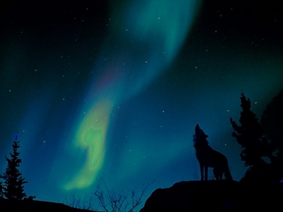

Een tekst is een verzameling woorden, die samen een boodschap vertellen.
Teksten kunnen in een schriftelijke vorm worden vastgelegd en overgebracht,
maar ook door middel van spraak.
View detalis
Karsten Notefrut
Een geschreven tekst kan worden gecommuniceerd door middel van drukwerk,
zoals een brief, krant, tijdschriften, brochures of een boek.
Voor de opkomst van de drukpers was men voor het schrijven en vermenigvuldigen
van tekst aangewezen op het handschrift.
Christina Flakt

Dankzij computers en het internet kunnen teksten ook digitaal worden opgeslagen en uitgewisseld.
In de eerste decennia waren gebruikers hiervoor aangewezen op tekstverwerkers,
fysieke opslagmedia (zoals de diskette) en printers.
Via het web is het verspreiden van een tekst veel eenvoudiger geworden, via bijvoorbeeld e-mail,
websites en sociale media
Innovatie
We maken dagelijks gebruik van gesproken teksten als we praten met de mensen om ons heen.
Maar ook op andere manieren worden gesproken boodschappen op ons afgevuurd.
Denk bijvoorbeeld eens aan programma's en reclame op radio en televisie.
Har vi tynde
Het gebruik van tekst om te communiceren, of dit nu in schrift of spraak is,
gaat in ons dagelijks leven vaak doen zonder dat we er bijzonder bij nadenken.
Het vinden van woorden om uit te drukken wat we denken,
wat we vinden en hebben meegemaakt gaat vrijwel automatisch.
 Het gebruik van tekst om te communiceren, of dit nu in schrift of spraak is,
gaat in ons dagelijks leven vaak doen zonder dat we er bijzonder bij nadenken.
Het vinden van woorden om uit te drukken wat we denken,
wat we vinden en hebben meegemaakt gaat vrijwel automatisch.
Het gebruik van tekst om te communiceren, of dit nu in schrift of spraak is,
gaat in ons dagelijks leven vaak doen zonder dat we er bijzonder bij nadenken.
Het vinden van woorden om uit te drukken wat we denken,
wat we vinden en hebben meegemaakt gaat vrijwel automatisch.
 Veel elementen in de partituur zijn gebaseerd op tekst. Tekst op zichzelf (zoals notenbalk-tekst,
dynamische tekens, tempo, vingerzetting, liedtekst, etc.) of in combinatie met lijnen (zoals volta's,
octaaf lijnen, gitaar barré lijnen etc.).
Veel elementen in de partituur zijn gebaseerd op tekst. Tekst op zichzelf (zoals notenbalk-tekst,
dynamische tekens, tempo, vingerzetting, liedtekst, etc.) of in combinatie met lijnen (zoals volta's,
octaaf lijnen, gitaar barré lijnen etc.).